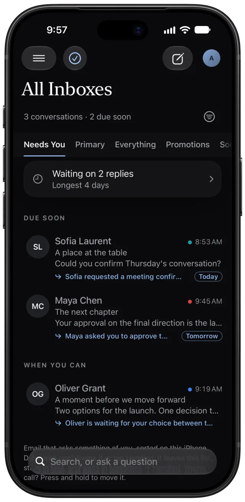
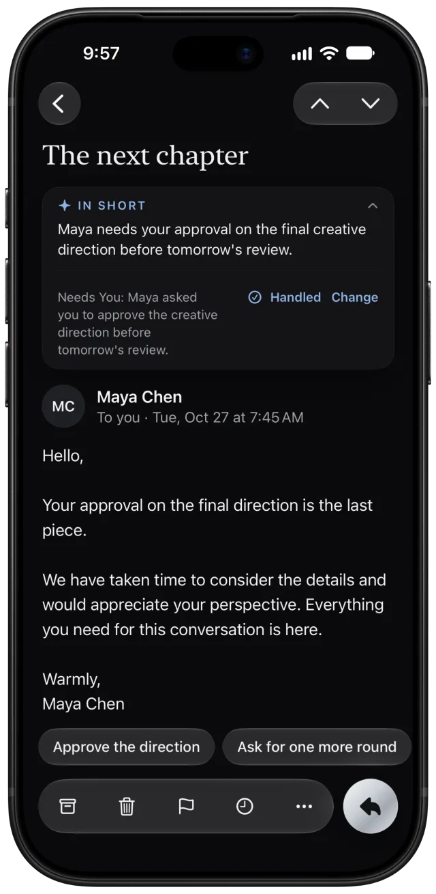
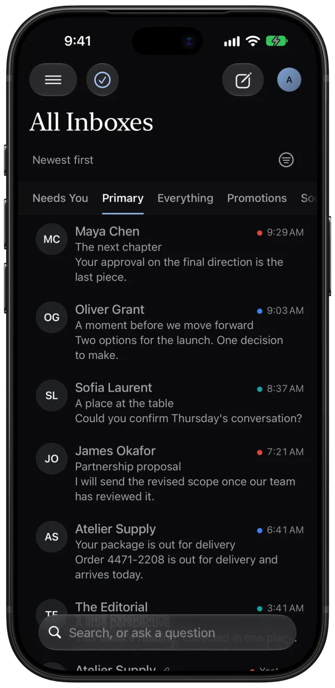
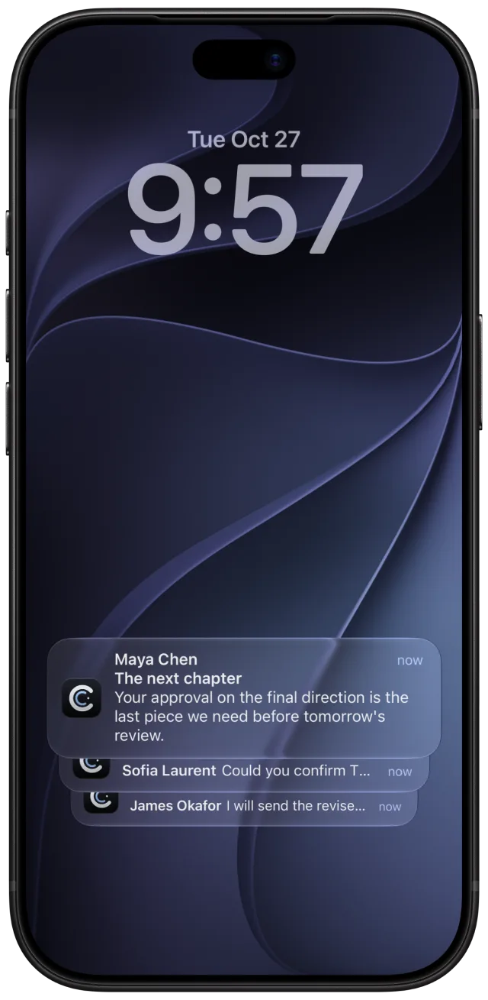
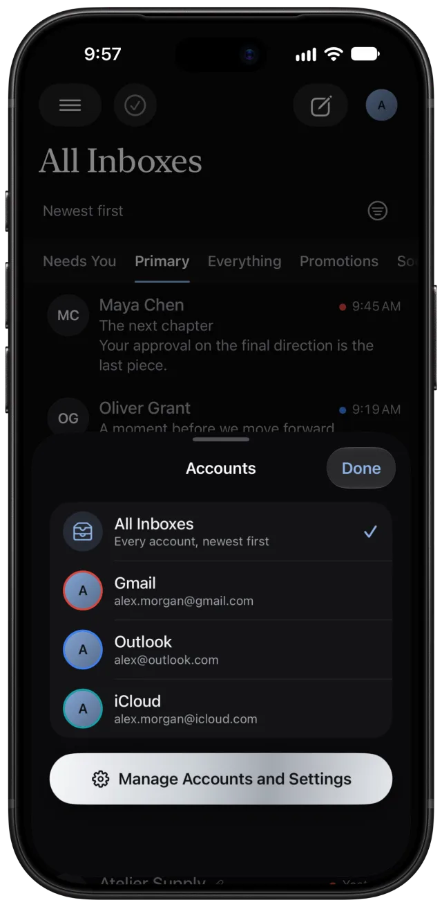
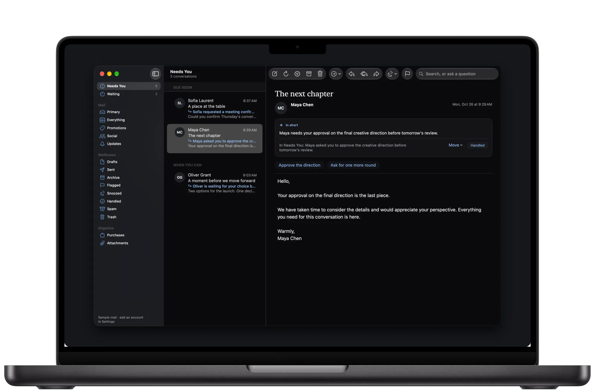
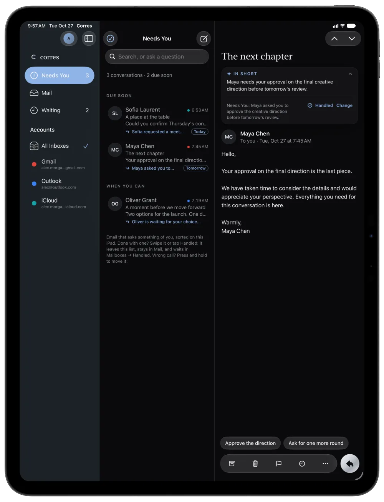
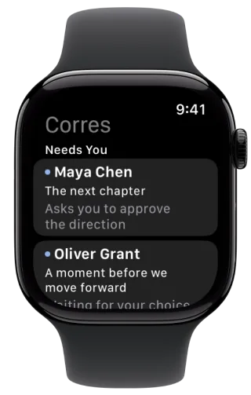
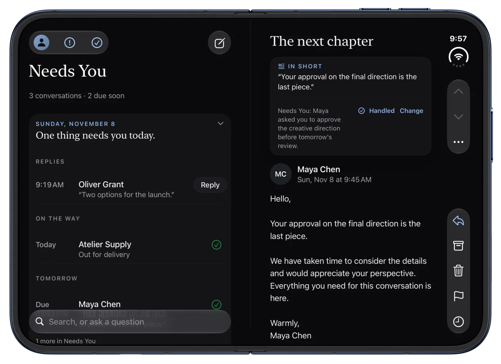
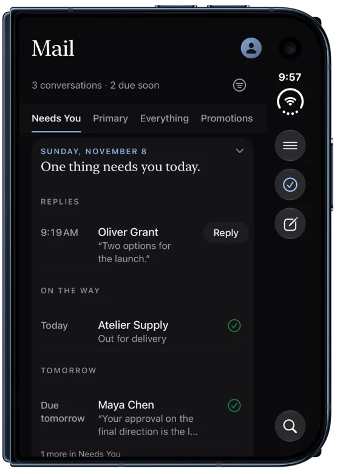

작성
나를 기다려 주는 임시 저장, 굵은 글씨, 목록과 링크, 다른 주소로 보내기, 템플릿, 첨부 파일 누락 확인. Apple Intelligence를 사용하는 Mac에서는 다시 쓰기로 글을 더 짧게, 더 따뜻하게, 더 격식 있게 바꾸거나 교정할 수 있습니다.
iPhone, iPad, Mac, Apple Watch를 위한 이메일
Corres를 열면 나에게 필요한 메일이 먼저 보입니다. 나에게 무언가를 요청하는 모든 이메일이 그 이유와 함께 놓입니다. 나머지 메일은 한 번만 탭하면 됩니다. 모든 메일은 내 기기에서 읽고 분류합니다.
베타 기간에는 무료로 사용해 볼 수 있으며, iPhone, iPad, Mac, Apple Watch를 지원합니다. 아직 App Store에는 출시되지 않았습니다.

Corres가 메일을 읽는 방법
대부분의 이메일은 나에게 아무것도 요청하지 않습니다. Corres는 요청하는 이메일을 찾아내고, 그 이유를 알려줍니다.
나에게 필요
나에게 무언가를 요청하는 이메일이 가장 먼저, 각각 여기 있는 이유와 함께 표시됩니다. 아직 답장을 주지 않은 사람은 바로 위 한 줄에 있습니다. 나머지는 확인할 때까지 ‘기본’에서 기다립니다.

메일
그 옆에는 ‘모두’, ‘프로모션’, ‘소셜’, ‘업데이트’가 있으며, 추가한 모든 계정을 Corres만의 규칙으로 분류합니다. ‘프로모션’과 ‘업데이트’는 보낸 사람마다 한 줄로 표시되고, 한 번 쓸어넘기면 그 보낸 사람의 메일이 모두 정리됩니다. 이메일 하나, 또는 한 보낸 사람의 메일 전체를 옮기면 Corres가 그로부터 배웁니다. 배운 내용은 모두 설정에서 확인할 수 있습니다.

알림
Outlook의 새 메일은 Corres가 닫혀 있어도 몇 초 안에 알림을 보냅니다. iCloud도 해당 계정에서 즉시 알림을 켜면 마찬가지입니다. 모든 새 메일, 사람과 시간이 중요한 메일, 또는 나에게 필요한 메일만. 계정마다, 한 화면에서 선택할 수 있습니다.

계정
Gmail, Google Workspace, Outlook, Microsoft 365, iCloud Mail은 물론, Yahoo, Fastmail, Yahoo! JAPAN, Naver, QQ, 163 등 거의 모든 이메일을 주소와 암호 또는 앱 암호로 추가할 수 있습니다. Mac에서는 Proton Mail Bridge를 통해 Proton Mail도 사용할 수 있습니다. 계정마다 이름, 색상, 알림, 서명을 따로 둡니다. 사진을 탭하면 한 계정만 볼 수 있습니다.

iPhone, iPad, Mac, Apple Watch
어디서나 같은 ‘나에게 필요’, 같은 분류, 같은 계정. 계정을 한 번 추가하면 iCloud 키체인을 통해 다른 기기에도 나타납니다. Mac에서는 Mail과 Gmail의 단축키를 모두 지원하는 네이티브 앱. Apple Watch에서는 나에게 필요한 메일과 오늘의 브리핑을 손목과 시계 페이스에서.



iPhone Duo
펼치면 메일 목록과 읽고 있는 이메일이 나란히 놓입니다. 접어도 Corres는 보던 위치를 기억하고, ‘나에게 필요’는 여전히 맨 앞에 있습니다.


세부 사항
Corres는 기기에서 동작하는 자체 메일 엔진으로 실행됩니다. 보관과 삭제는 쓸어넘기는 순간 이루어지고, 신호가 없어도 마찬가지입니다. 오프라인에서 보낸 이메일은 다시 연결되면 저절로 전송됩니다. 웹이나 다른 기기에서 한 작업도 여기에 그대로 나타납니다.
나를 기다려 주는 임시 저장, 굵은 글씨, 목록과 링크, 다른 주소로 보내기, 템플릿, 첨부 파일 누락 확인. Apple Intelligence를 사용하는 Mac에서는 다시 쓰기로 글을 더 짧게, 더 따뜻하게, 더 격식 있게 바꾸거나 교정할 수 있습니다.
이메일 발송을 예약하고, 아무도 답장하지 않으면 알림을 받고, 방금 보낸 메일을 되돌릴 수 있습니다. iPhone, iPad, Mac 모두에서.
Apple Intelligence가 있으면 Corres는 긴 대화를 요약하고, 각 요약을 원래 이메일과 대조하며, 나에게 무언가를 묻는 이메일에는 나다운 문체로 답장을 준비해 둡니다. 모든 작업이 기기에서 이루어지며, 내 확인 없이는 절대 전송되지 않습니다. Apple Intelligence가 없어도 ‘나에게 필요’와 그 이유, ‘요약하면’은 그대로 동작합니다.
보관한 메일까지 포함해 모든 계정을 한 번에 검색합니다. from:, subject:, before:, in: 같은 필터가 입력하는 동안 제안되며, 지금 보고 있는 메일함이나 전체 메일에서 사용할 수 있습니다. 또는 “내 항공편이 언제지?”라고 물으면, 내 이메일에서 답을 찾아 출처 메시지와 함께 보여줍니다.
첫 이메일을 받는 방식을 선택하세요. 모두 검토, 회사만 검토, 새 보낸 사람으로 표시, 또는 모두 허용. 차단하면 Corres에서 숨겨질 뿐, 계정은 전혀 바뀌지 않습니다.
나에게 필요한 메일을 하나씩 처리하세요. 답장하거나, 처리됨으로 표시하거나, 다시 알림을 설정하거나, 보관하면 다음 메일이 열립니다. 모두 처리될 때까지.
디지털 서명이 있는 업무 이메일에는 서명한 사람이 표시되고, Corres가 기기에서 서명과 보낸 사람을 확인한 경우에만 ‘확인됨’이 표시됩니다.
내 시간대 기준의 일시, 장소, 참여할 통화, 그리고 내가 비어 있는지를 확인하세요. 이메일 안에서 바로 수락, 미정, 거절할 수 있고, Corres를 떠나지 않고도 자동 응답을 켤 수 있습니다.
메일이 도착하는 대로 분류합니다. 규칙은 Gmail과 Outlook 안에서도 실행되므로 Corres가 닫혀 있어도 동작합니다. 대화의 알림을 끄면 새 답장이 와도 조용합니다.
청구서 금액, 배송 날짜, 입금, 또는 상대가 나에게 요청한 내용을 그 사람의 말 그대로. 이메일에서 읽어 맨 위에 보여줍니다. Apple Intelligence가 필요하지 않습니다.
원격 이미지와 읽음 확인 추적기는 표시를 선택할 때까지 차단됩니다. 수신 거부는 탭 한 번이면 됩니다.
회사가 이메일용으로 공개한 로고를 인증서로 보증된 경우에만 표시합니다. 로고는 저희 서버가 가져오므로, 내가 언제 메일을 읽었는지 어떤 회사도 알 수 없습니다.
Siri에게 이메일을 쓰거나, 보내거나, 찾아 달라고 요청하세요. ‘나에게 필요’와 데일리 브리핑은 위젯, 제어 센터, 시계 페이스에서, 배송 정보는 잠금 화면에서 확인할 수 있습니다.
영어(미국, 영국, 호주, 캐나다), 일본어, 중국어(간체 및 번체), 한국어, 독일어, 프랑스어(프랑스, 캐나다), 스페인어, 포르투갈어(브라질, 포르투갈), 이탈리아어, 네덜란드어, 스웨덴어, 덴마크어, 노르웨이어, 폴란드어, 체코어, 루마니아어, 우크라이나어, 터키어, 아랍어, 히브리어, 베트남어, 인도네시아어, 벵골어를 지원하며, 아랍어와 히브리어는 오른쪽에서 왼쪽으로 표시됩니다. 각 언어로 쓴 메일에서 기한, 청구서, 배송을 읽어내고, 주말은 내 지역에 맞춥니다.
Apple의 손쉬운 사용 감사로 점검했습니다. VoiceOver는 방금 일어난 일을 알려주고, 음성 제어는 사람들이 실제로 말하는 단어에 반응하므로 ‘삭제 탭’이라고 말해도 휴지통으로 옮겨집니다. 텍스트는 iPhone과 iPad에서 가장 큰 크기까지, Mac에서는 두 배 크기까지 커집니다.
추천 답장은 내가 쓰는 인사말, 맺음말, 길이를 따릅니다. 보낸 이메일을 바탕으로 기기에서 학습합니다.
어떤 이메일이든 오늘 저녁, 내일 아침, 또는 기한에 맞춰 미리 알림에 추가하세요. 해당 이메일로 바로 돌아가는 링크도 함께 담깁니다.
어떤 앱에서든 페이지나 사진을 공유하고, 공유 시트 안에서 바로 이메일을 작성하세요.
나에게 필요한 메일, 오늘의 브리핑, 각 이메일의 첫 부분. 음성, 손글씨, 준비된 답장으로 답하거나 처리됨으로 표시할 수 있습니다.
대화가 수천 개여도 Corres는 최신 메일을 바로 보여주고, 당겨서 새로 고침은 몇 초 만에 끝납니다.
개인정보 보호
메일은 이메일 제공업체에서 iPhone, iPad, Mac으로 바로 전달되어 그곳에 머물며, Apple의 기본 암호화로 보호됩니다. Corres의 서버는 메일을 받지 않습니다.
‘나에게 필요’, 요약, 추천 답장, 검색에서의 답변은 모두 기기에서 실행됩니다. 어떤 AI 서비스로도 전송되지 않으며, AI 학습에도 사용되지 않습니다.
광고 없음, 분석 없음, 추적 없음, 읽음 확인 없음. Corres는 사용하는 사람들이 내는 비용으로 운영됩니다.
세 개의 작은 서버가 돕지만, 어느 것도 이메일을 읽지 않습니다. 메일함에 변화가 있다는 사실만 아는 알림 중계 서버, 보낸 사람의 웹 도메인만 보는 로고 서버, 그리고 iCloud처럼 암호로 로그인하는 계정에서 즉시 알림을 켠 경우에만 동작하며 그 암호의 암호화된 사본을 보관하고 새 메일만 지켜보는 메일 감시 서버입니다. 각 서버가 무엇을 보관하는지는 개인정보 처리방침에 정확히 나와 있습니다. Google API에서 받은 정보에 대한 Corres의 사용 및 전송은 제한적 사용 요구 사항(Limited Use)을 포함하여 Google API Services User Data Policy를 준수합니다.
가격
모든 계정과 모든 메일 기능이 무료입니다. Corres Pro는 메일을 대신 읽어 주는 기능을 더합니다.
모든 계정, 기간 제한 없음
2주 무료 체험으로 시작합니다. 미국 가격이며, 내 지역의 가격은 App Store에 표시됩니다.
베타 기간에는 TestFlight 참여자 모두가 Corres Pro를 무료로 사용합니다.
Gmail과 Google Workspace, Outlook.com, Hotmail, Live, 회사 또는 학교의 Microsoft 365, iCloud Mail, 그리고 IMAP을 지원하는 거의 모든 이메일: Yahoo, AOL, Fastmail, Zoho, GMX, Yahoo! JAPAN, Naver, QQ, 163 등. 원하는 만큼 추가할 수 있으며, 모두 하나의 받은 편지함을 공유합니다. iCloud와 대부분의 서비스는 기본 암호 대신 앱 암호를 요구하며, Corres가 만드는 방법을 단계별로 안내합니다.
네, 저희가 추가해 드린 후에 사용할 수 있습니다. Google이 Corres 검토를 마칠 때까지는 Google 테스트 목록에 있는 주소만 Gmail에 로그인할 수 있으며, Google이 7일마다 다시 로그인을 요청합니다. 사용하려는 Gmail 주소를 이메일로 보내 주세요. Outlook, iCloud 및 기타 이메일은 바로 사용할 수 있습니다.
아니요. 메일은 이메일 제공업체에서 iPhone, iPad, Mac으로 바로 다운로드되어 그곳에서 처리됩니다. 알림 중계 서버는 메일함에 변화가 있다는 사실만 알 뿐, 그 내용은 절대 알지 못합니다. 자세한 내용은 개인정보 처리방침을 참고하세요.
아니요. ‘나에게 필요’, ‘대기 중’, 분류, ‘요약하면’은 지원되는 모든 iPhone, iPad, Mac에서 동작합니다. 요약과 답장 초안은 기기에서 Apple Intelligence를 지원하는 경우, 그 기기 자체에서 Apple Intelligence를 사용합니다.
네. iPad에서는 3단 화면, Mac에서는 자체 윈도우, 메뉴, 키보드 단축키를 갖춘 네이티브 앱, Apple Watch에서는 나에게 필요한 메일을 보여주고 음성으로 답장할 수 있습니다. Corres Pro 하나로 iPhone, iPad, Mac을 모두 사용할 수 있으며, 추가한 계정은 iCloud 키체인을 통해 어디서나 함께합니다.
네. 메일이 기기에 있으므로 오프라인에서도 읽을 수 있습니다. 보관, 삭제, 깃발 표시, 전송한 작업은 다시 온라인이 되면 저절로 처리됩니다.
Postwright는 저희가 Corres를 위해 만든 메일 엔진입니다. 기기에서 실행되며 Gmail, Outlook, iCloud 및 기타 메일 서버와 각각에 맞는 방식으로 통신하므로, 작업은 즉시 반영되고 모든 계정이 웹과 같은 상태를 유지합니다. Corres가 메일을 보관할 자체 서버가 필요 없는 이유입니다.
Apple의 TestFlight 앱을 설치한 다음, iPhone, iPad 또는 Mac에서 Corres 베타 링크를 여세요. 계정을 추가하기 전에 샘플 메일로 모든 화면을 둘러볼 수 있습니다. App Store 출시도 준비 중입니다.
캘리포니아의 독립 소프트웨어 회사 Anwar Creative Studio가 만듭니다. 안심하고 쓸 수 있는 금액을 알려주는 Artha도 만들고 있습니다. support@corres.app로 연락하시면 이메일로 답장드립니다.
세 단계로 Corres를 사용해 보세요.
질문이나 의견: support@corres.app. 모든 이메일을 읽습니다.